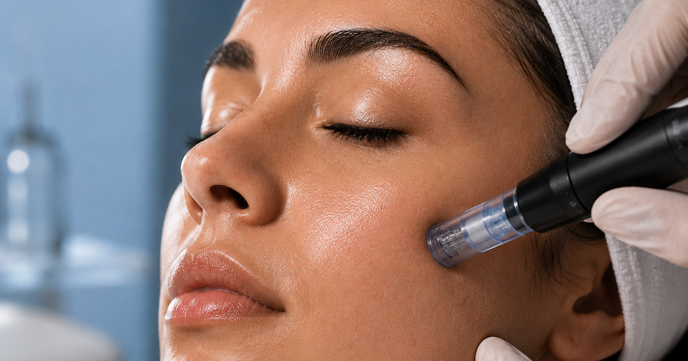

Uma técnica amplamente utilizada na estética regenerativa para estimular colágeno, melhorar a textura da pele e auxiliar em tratamentos capilares.

O microagulhamento é uma técnica de indução percutânea de colágeno realizada através de microperfurações controladas na pele. O objetivo é estimular mecanismos naturais de regeneração, favorecendo a produção de colágeno e elastina.
Diversos estudos demonstram que o microagulhamento pode melhorar a firmeza, uniformidade e textura da pele. O tratamento é frequentemente utilizado para minimizar linhas finas, melhorar cicatrizes de acne e promover renovação cutânea.
A técnica pode estimular a regeneração dérmica e auxiliar na melhora da aparência das estrias, tanto vermelhas quanto brancas. Cada protocolo deve ser personalizado de acordo com as características da pele e o estágio das lesões.
O microagulhamento também vem sendo utilizado como recurso complementar em protocolos capilares. Estudos sugerem que a técnica pode estimular fatores de crescimento relacionados ao desenvolvimento dos fios quando associada a tratamentos específicos.
Antes de realizar qualquer procedimento, é fundamental uma avaliação profissional. O tipo de pele, fototipo, histórico de melasma, sensibilidade e objetivo do tratamento devem ser considerados para garantir segurança e resultados adequados.
O microagulhamento é uma ferramenta versátil dentro da estética regenerativa, podendo ser utilizado em protocolos faciais, corporais e capilares. Quando aplicado de forma personalizada, oferece uma abordagem segura e baseada em evidências para diferentes necessidades.
Agendar Avaliação